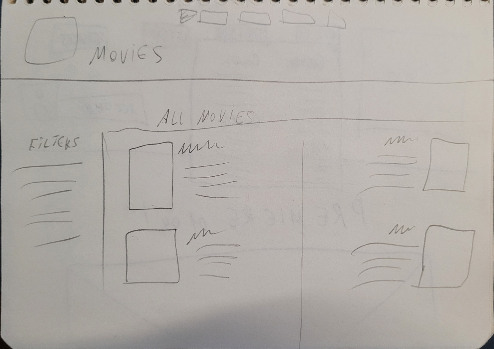
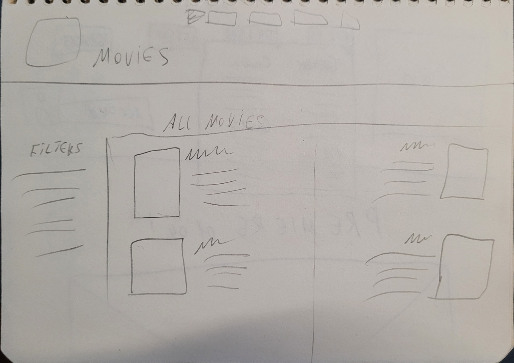
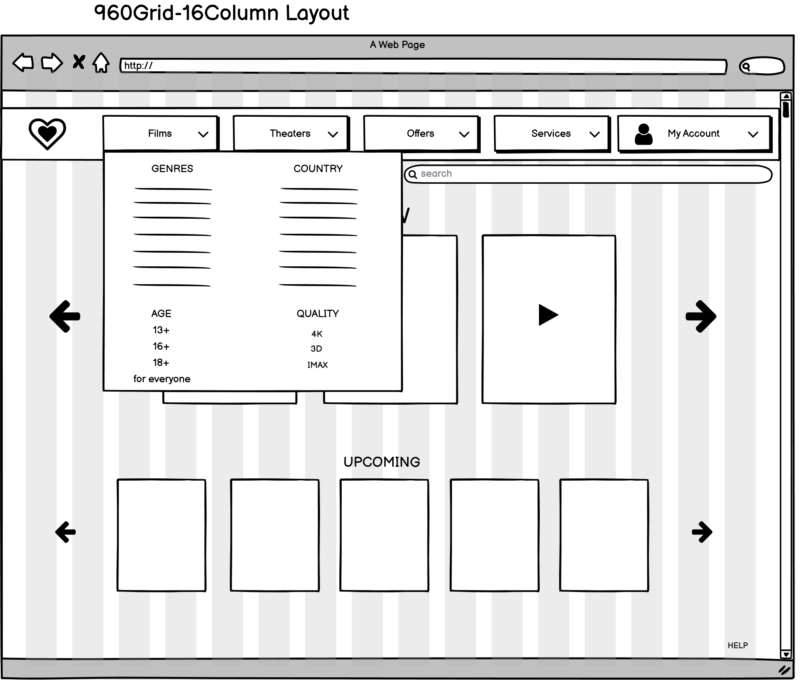
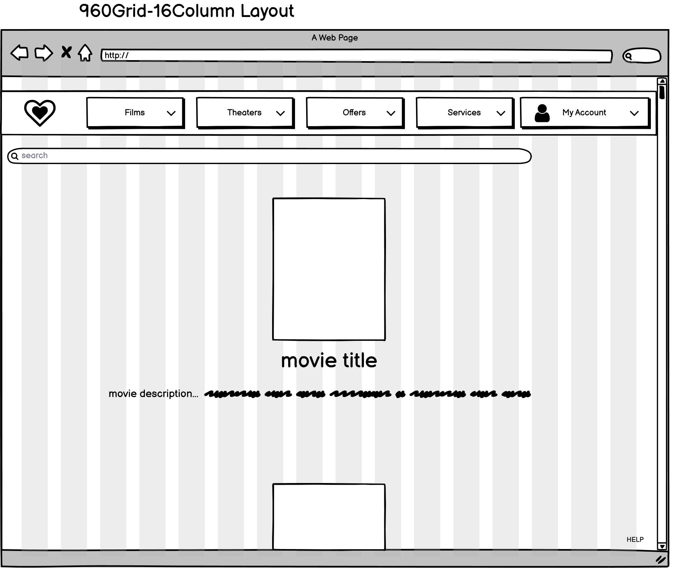

Interaction Design project
Goal
The assignment was to design a website for a cinema chain, that appeals to the given target audience (young "digital natives" - people that grew up with the Internet) and conforms to the businesses’ strategy. This meant that we (in a team of 3) had to make a design for a website with the best user experience possible, and that would include features necessary for facilitating the business strategy, such as
Process
Empathize - Define - Ideate - Prototype - Test
User stories – for understanding user needs

The first step was to generate many user stories, in order to understand our user needs better. As the project went along, we focused only on the most relevant user stories for our project.
Ideation – to generate ideas on how to design the website and which features to make.
After finding several user needs, it was time to combine those with the business goal and ideate. We focused on necessary features for our TA, as well as the structure of the site and ways of navigating it.
Concrete scenarios – for presenting the ideas to the stakeholders
Flowchart – for assessing the logic and layout of the site

Further into the project, after developing the concept more, we created flowcharts for various user tasks, to assess the structure and navigation of our website.
First wireframes - We started with creating the first wireframes on paper, in order to get an idea of the layout of the site.
 

Once the layout was refined, we iterated with higher quality wireframes
 
Result
Finally, the result of our work was an extensive, interactive wireframe for the website. The wireframe showcases the most relevant features we implemented into the design, as well as the general layout, structure and flow of the website.


You can check out the working prototype for yourself here.
What I learned
- To translate business goals and user needs into a user centered system structure that facilitates a fluent user - system interaction.
- Gained more experience in working in a team of designers.
- To efficiently communicate my designs to stakeholders and teammates.